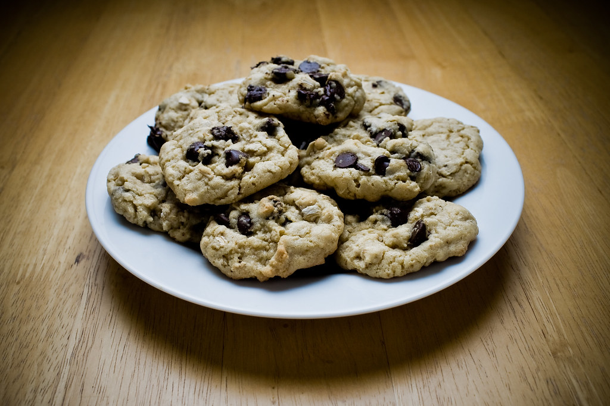

Odin recipes
Oatmeal Chocolate Chip Cookies

These delicious oatmeal chocolate chip cookies have JUST the right combination of crisp on the outside, chewy on the inside amazingness and of course big notes of chocolate, butter, and just the right hit of salt.
Ingredients:
- All-purpose FLour
- Granulated Sugar
- Egg
- Unsalted Butter
- Baking Soda
- Vanilla Extract
- Light Brown Sugar
- Rolled Oats
- Salt
- Semi-Sweet Chocolate Chips
Steps:
- Whisk the dry ingredients together in a large bowl.
- Combine the butter and sugars in the bowl of your stand mixer and beat together until well mixed.
- Add the egg and vanilla to the batter. mixing until combined.
- Add the flour mixture and mix on low until almost incorporated, then add the oats and chocolate chips. Mix until combined.
- Scoop that batter with a small ice cream scoop or cookie scoop. It’s about two tablespoons of dough per cookie.
- Roll into cookie dough balls and bake at 375F for 8-10 minutes. It never hurts to add a few chocolate chips on top of the cookie dough balls. This way you’ll have nice spots of chocolate peaking out of each cookie.